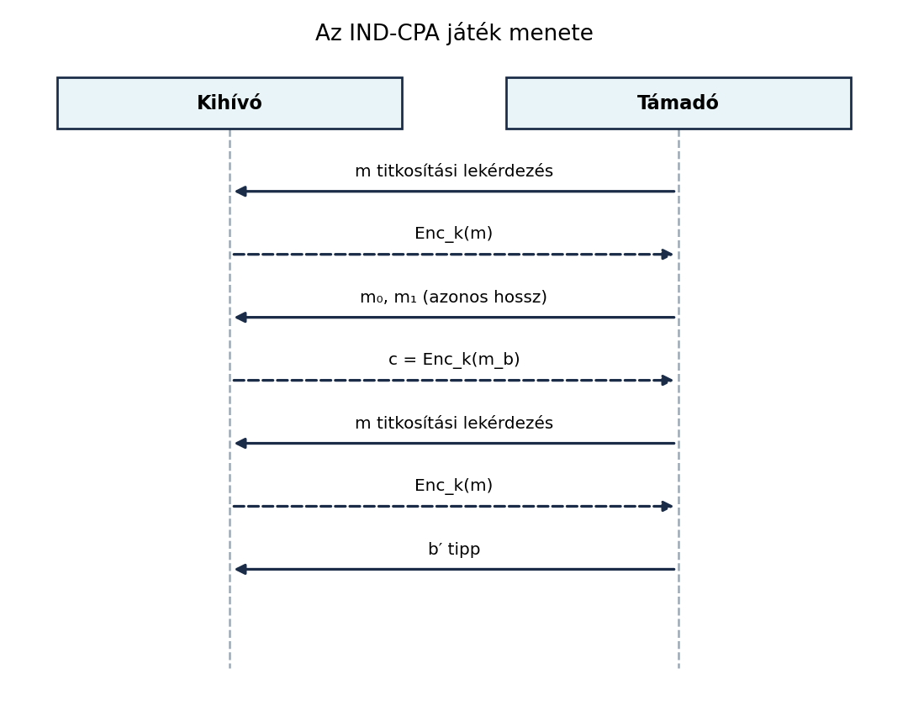

A titkosítás alapvető célja, hogy a támadó ne tudja megismerni az üzenetet. De mi történik akkor, ha a támadónak nem is kell a teljes üzenetet visszafejtenie, hanem csak egyetlen bitet szeretne megtudni róla? Képzeljük el, hogy egy bróker két lehetséges utasítást küld: „VÉTEL” vagy „ELADÁS”. Ha a rejtett szöveg mintázata, hossza vagy egyéb tulajdonsága elárulja, melyik történt, akkor a titkosítás gyakorlatilag kudarcot vallott, pedig a támadó soha nem fejtette vissza a kulcsot vagy az üzenetet.
A Játékalapú definíciók és a támadó előnye alfejezetben már bevezettük a játékalapú biztonsági definíciók nyelvét. Most ezt a nyelvet használjuk arra, hogy pontosan megfogalmazzuk: egy titkosítási séma akkor tekinthető biztonságosnak, ha a rejtett szöveg semmilyen hatékonyan kinyerhető részleges információt nem szivárogtat az üzenetről, azon túl, ami már eleve ismert (például a hossza). Ezt a tulajdonságot nevezzük szemantikai biztonságnak, és a gyakorlatban a vele ekvivalens IND-CPA (indistinguishability under chosen-plaintext attack) definícióval dolgozunk.
Az ECB és CBC üzemmód alfejezetben láttuk, hogy az ECB üzemmód determinisztikus volta miatt triviálisan feltörhető: azonos blokkok azonos rejtett blokkot adnak. Ebben az alfejezetben ezt a megfigyelést általánosítjuk, és formálisan bebizonyítjuk, hogy semmilyen determinisztikus titkosítási séma nem lehet IND-CPA biztonságos. Ez az egyik legfontosabb elv, amelyet a modern kriptográfiai tervezés során mindig szem előtt kell tartani.
Az IND-CPA játék egy kihívó (challenger) és egy támadó (adversary) közötti párbeszédként képzelhető el. A kihívó birtokolja a titkos kulcsot, és titkosítási szolgáltatást nyújt; a támadó célja, hogy két választott üzenet közül megállapítsa, melyiket titkosította a kihívó.

A diagramon látható, hogy a támadó a kihívás előtt és után is tetszőleges üzeneteket titkosíttathat a kihívóval. Ez a „chosen-plaintext attack” (CPA) modell azt a valós helyzetet ragadja meg, amikor a támadó befolyásolhatja, hogy milyen üzenetek kerüljenek titkosításra – például egy webalkalmazásba injektált adatok révén. A kihívás után a támadónak ki kell találnia a bitet; ha érdemben jobban tippel, mint a véletlen, akkor a séma nem biztonságos.
Először rögzítsük a szimmetrikus titkosítási séma fogalmát, amelyet a Játékalapú definíciók és a támadó előnye alfejezetben már bevezettünk.
Definíció. Egy szimmetrikus titkosítási séma három algoritmusból áll:
A séma lehet determinisztikus vagy randomizált. Determinisztikus esetben ugyanazon és mindig ugyanazt a -t adja; randomizált esetben a titkosítás véletlen érméket is használhat, így azonos üzenetből több különböző rejtett szöveg keletkezhet.
A szemantikai biztonság informális megfogalmazása a következő: bármely, a rejtett szövegből kinyerhető, hatékonyan számítható információ az üzenetről megegyezik azzal, amit a támadó akkor is tudna, ha egyáltalán nem látná a rejtett szöveget, csak az üzenet hosszát. Ennek formális kezelésére a megkülönböztethetetlenségi játékokat használjuk.
Definíció. (IND-EAV játék). A szimmetrikus titkosítási séma és egy támadó között az IND-EAV (indistinguishability under eavesdropping) játék a következő lépésekből áll:
Az támadó előnye:
A séma IND-EAV biztonságos, ha minden polinomiális időben futó támadóra ez az előny elhanyagolható -ben.
Definíció. (IND-CPA játék). A szimmetrikus titkosítási séma és egy támadó között az IND-CPA (indistinguishability under chosen-plaintext attack) játék a következő:
Az előny ugyanúgy definiált:
A séma IND-CPA biztonságos, ha minden polinomiális időben futó támadóra ez az előny elhanyagolható -ben.
A két definíció közötti különbség a titkosítási orákulum jelenléte. Az IND-EAV játékban a támadó csak a kihívás rejtett szövegét látja; az IND-CPA játékban ezen felül saját választott üzeneteit is titkosíttathatja. A valóságban a támadó gyakran rendelkezik ilyen képességgel: például egy webalkalmazásban a felhasználó által megadott adatokat a szerver titkosítva tárolja, és a támadó megfigyelheti a keletkező rejtett szövegeket. Ezért az IND-CPA a gyakorlatban relevánsabb modell.
Megjegyzés. A támadó a kihívás előtt és után is kérhet titkosítást; a kihívás után adaptívan, már ismeretében választhatja a lekérdezéseit. Ez a szabványos definíció, ezt használjuk a Redukciós bizonyítások: PRG-ből folyamrejtjel, PRF-ből IND-CPA alfejezetben is.
A szemantikai biztonságot formálisan a következő módon definiálhatjuk. A támadó egy valós és egy szimulált kísérletben vesz részt. A valós kísérletben a kihívó titkosít egy véletlen üzenetet, és a támadó megkapja -t. A támadó egy függvényt szeretne kiszámítani -ből. A szimulált kísérletben egy szimulátor nem kap -t, csak az hosszát, és ugyanazt az -et kell kiszámítania.
Definíció (szemantikai biztonság). A séma szemantikailag biztonságos, ha minden PPT támadóhoz létezik olyan PPT , amely csak az üzenet hosszát kapja meg, hogy minden hatékonyan mintavételezhető üzeneteloszlásra és minden hatékonyan számítható -re ahol , és a valószínűségek a kulcs, az és a támadók véletlenjére vonatkoznak.
Tétel (ekvivalencia, vázlat). Egy szimmetrikus titkosítási séma pontosan akkor szemantikailag biztonságos, ha IND-EAV biztonságos. Hasonlóan, ha a titkosítási orákulumot is figyelembe vesszük, a szemantikai biztonság CPA-változata ekvivalens az IND-CPA biztonsággal.
Bizonyítási vázlat. A teljes bizonyítás formális, de a fő gondolat egyszerű.
(⇐) IND-EAV ⇒ szemantikai biztonság. Adott -hoz a szimulátor a kapott hosszra egy saját kulccsal titkosítja a üzenetet, és az így kapott rejtett szöveget adja -nak. Ha a valódi -vel érdemben jobban számítaná ki -et, mint ezzel az üres titkosítással, akkor a két rejtett szöveg-eloszlás megkülönböztethető lenne, ami IND-EAV támadót adna. A pontos bizonyítás átlagolási (hibrid) érvelést igényel az eloszlásra; ezt itt csak vázlatként jelezzük (lásd Katz–Lindell).
(⇒) Szemantikai biztonság ⇒ IND-EAV. Tegyük fel, hogy előnyű IND-EAV támadó az párral. Legyen az egyenletes eloszlása, és . a -ből eséllyel adja -et, míg bármely szimulátor, amely csak az hosszat látja, legfeljebb eséllyel; a különbség , ami ellentmond a szemantikai biztonságnak. ∎
Ez az ekvivalencia az alapja annak, hogy a modern kriptográfiában a szemantikai biztonságot szinte mindig a technikailag könnyebben kezelhető IND-játékokkal vizsgáljuk.
Továbbvitt eredmény. Az IND-CPA definíciót és a fenti ekvivalenciát használjuk az IND-CCA és a malleabilitás, a Redukciós bizonyítások: PRG-ből folyamrejtjel, PRF-ből IND-CPA, az A textbook RSA támadásai és az ElGamal-titkosítás, hibrid titkosítás és a KEM/DEM szerkezet alfejezetekben. A hossz-szivárgás problémája pedig a TLS-támadások története alfejezetben tér vissza.
Az ECB és CBC üzemmód alfejezetben láttuk, hogy az ECB determinisztikus volta miatt a támadó felismerheti az ismétlődő blokkokat. Most ezt általánosítjuk.
Tétel. Ha a szimmetrikus titkosítási séma algoritmusa determinisztikus, akkor nem IND-CPA biztonságos.
Bizonyítási terv. Olyan támadót adunk, amely a titkosítási orákulum segítségével előre kiszámítja az egyik kihívási üzenet rejtett szövegét. A determinisztikusság miatt ez a rejtett szöveg pontosan megegyezik a kihívásban kapott értékkel, ha a kihívó ugyanazt az üzenetet titkosította.
Bizonyítás. Legyen a következő támadó:
Mivel determinisztikus, ha , akkor a kihívás rejtett szövege pontosan , tehát a 4. lépésben -t lát, és -t ad. Ha , akkor . A helyességi követelményből következik, hogy injektív: különböző üzenetekhez különböző rejtett szövegek tartoznak (különben a visszafejtés nem lenne egyértelmű). Ezért , és a kimenetet adja. Így , tehát
Ez az előny nem elhanyagolható, tehát nem IND-CPA biztonságos. ∎
Következmény. Az ECB üzemmód, a textbook RSA titkosítás (), és minden más determinisztikus titkosítási séma automatikusan sérti az IND-CPA követelményt. A gyakorlatban ezért a biztonságos titkosítási sémák mindig randomizáltak: például a CBC üzemmód véletlen IV-t használ, a CTR üzemmód egyedi nonce-t és számlálót, az RSA pedig OAEP kitöltést alkalmaz.
Megjegyzés. A tétel bizonyítása kihasználja a titkosítási orákulumot. IND-EAV játékban, ahol a támadó nem kérhet titkosítást, a determinisztikusság önmagában nem zárja ki az IND-EAV biztonságot: például a PRG-alapú folyamrejtjel, (vagy az OTP rögzített hosszú üzenetre) determinisztikus, mégis IND-EAV biztonságos (a Redukciós bizonyítások: PRG-ből folyamrejtjel, PRF-ből IND-CPA alfejezet tétele). A CPA-modell azonban a valós fenyegetéseket jobban tükrözi, ezért a mindennapi gyakorlatban az IND-CPA biztonságot követeljük meg.
Az IND-CPA definícióban megköveteljük, hogy a két kihívási üzenet azonos hosszúságú legyen. Ennek oka, hogy a titkosítási sémák általában nem rejtik el az üzenet hosszát: a rejtett szöveg hossza tipikusan függ a nyílt szöveg hosszától. Ha a támadó két különböző hosszúságú üzenetet adhatna meg, akkor a kapott rejtett szöveg hossza alapján triviálisan meg tudná állapítani, melyik üzenetet titkosították.
A hossz-szivárgás tehát egy olyan információ, amelyet a definíció explicit módon megenged. Ez nem jelenti azt, hogy a hossz-szivárgás mindig elfogadható. A valós protokollokban gyakran alkalmaznak kitöltést (padding) a hossz-információ részleges elrejtésére, de a teljes elrejtés általában nem lehetséges, vagy nagyon drága. A támadó a megfigyelt rejtett szöveg hosszából és időzítéséből statisztikai következtetéseket vonhat le.
A hossz-szivárgás egyik legismertebb gyakorlati következménye a weboldal-ujjlenyomat (website fingerprinting). Amikor egy felhasználó HTTPS-en keresztül meglátogat egy weboldalt, a böngésző számos erőforrást tölt le: HTML-oldalt, képeket, stíluslapokat, szkripteket, API-hívásokat. Bár a TLS titkosítja a tartalmat, a hálózati megfigyelő látja a titkosított csomagok méretét, irányát és időzítését. A weboldalak betöltési mintázata – hány kérés, milyen méretű válaszok, milyen sorrendben – rendkívül jellegzetes ujjlenyomatot alkot.
A támadó először felépít egy adatbázist: saját maga is meglátogatja a célba vett weboldalakat, és rögzíti a titkosított forgalom jellemzőit. Ezután egy áldozat forgalmát megfigyelve összehasonlítja a mintázatot az adatbázissal, és így nagy valószínűséggel azonosítja, melyik weboldalt nézte az áldozat. Ez a támadás különösen aggasztó anonim hálózatok, például a Tor esetében, ahol a cél éppen a forgalom forrásának és céljának elrejtése. A kutatások szerint a weboldal-ujjlenyomat támadások bizonyos feltételek mellett magas sikerességi arányt érhetnek el; a konkrét számok a kísérleti beállítástól és a vizsgált weboldalak számától függően változnak (ellenőrzési igény: a pontos eredmények forrását a szakirodalomban kell megkeresni).
A TLS 1.3 lehetőséget biztosít a rekordok mesterséges kitöltésére, amellyel a forgalom méreteloszlása részben egységesíthető, de a támadó számára a csomagok időzítése továbbra is értékes információ marad. A hossz-szivárgás elleni teljes védelemhez a forgalom folyamatos, egyenletes méretű csomagokra történő átalakítása lenne szükséges, ami jelentős sávszélesség- és késleltetésköltséggel jár.
„A titkosítás elrejti a hosszt.” Ez téves. A legtöbb séma megőrzi a hosszt, és az IND-CPA definíció is csak azonos hosszúságú üzenetekre vonatkozik. Ha a hossz érzékeny, azt külön intézkedésekkel kell védeni.
Determinisztikus titkosítás használata biztonságosnak gondolva. Az ECB, a textbook RSA vagy bármely más determinisztikus séma nem IND-CPA biztonságos. Mindig randomizált üzemmódot (CBC véletlen IV-vel, CTR egyedi nonce-szal) vagy biztonságos nyilvános kulcsú kitöltést (OAEP) kell választani.
A titkosítási orákulum figyelmen kívül hagyása. Sok fejlesztő úgy gondolja, hogy ha a támadó nem látja a kulcsot, akkor nem tudhatja meg, milyen rejtett szöveg tartozik egy adott üzenethez. Valójában a támadó gyakran saját üzeneteket tud titkosíttatni a rendszerrel, például egy webalkalmazásban a felhasználó által vezérelt mezők révén. Ezért a CPA-modell a valós fenyegetéseket jobban tükrözi, mint az egyszerű lehallgatás.
Az IND-CPA játékban a támadó által választott üzenetek hosszának eltérése. Ha a két üzenet nem azonos hosszúságú, a támadó a rejtett szöveg hossza alapján triviálisan nyerhet, és a játék értelmetlenné válik. A definíció alkalmazásakor mindig ügyelni kell a hosszfeltételre.
1. feladat (A) Definiáld formálisan az IND-CPA játékot és az előny fogalmát.
2. feladat (A) Adj meg két példát determinisztikus titkosítási sémára: egy szimmetrikus és egy nyilvános kulcsú példát.
3. feladat (B) Bizonyítsd be, hogy az ECB üzemmód nem IND-CPA biztonságos, az ECB és CBC üzemmód alfejezetben látott támadás általánosításával.
4. feladat (B) Tegyük fel, hogy egy titkosítási séma a nyílt szöveget fix 1024 bájtos blokkra egészíti ki kitöltéssel, így a rejtett szöveg hossza mindig ugyanannyi. Hogyan módosul az IND-CPA definíció, ha a hossz-szivárgást teljesen kizárjuk? Lehet-e ilyen séma egyáltalán IND-CPA biztonságos?
5. feladat (C) Igaz-e a következő állítás: ha egy séma IND-EAV biztonságos, akkor IND-CPA biztonságos is? Válaszodat indokold ellenpéldával vagy bizonyítási vázzal.
6. feladat (D) Egy webalkalmazás a felhasználó által kiválasztott nyelvet („hu” vagy „en”) titkosítva tárolja a böngésző cookie-jában. A támadó a hálózati forgalom megfigyelésével szeretné eldönteni, melyik nyelvet választotta a felhasználó. Tervezz egy egyszerű támadási stratégiát, és magyarázd el, milyen feltételek mellett lehet sikeres. Milyen kriptográfiai elv sérül?
Önellenőrzés – válaszok
Az IND-CPA játékban a támadó a kihívás előtt és után is titkosítási lekérdezéseket végezhet; az IND-EAV játékban nem. Ez a CPA-modell a valós támadói képességeket jobban tükrözi.
Nem. A tétel szerint minden determinisztikus titkosítási séma ellen létezik olyan támadó, amely a titkosítási orákulummal előre kiszámítja az egyik üzenet rejtett szövegét, és így 1/2 előnnyel nyer.
Mert a titkosítási sémák általában nem rejtik el az üzenet hosszát, és a támadó a hossz alapján triviálisan megkülönböztethetné a két üzenetet.
Például egy webalkalmazás, ahol a felhasználó által megadott adatokat a szerver titkosítva tárolja, és a támadó a saját fiókjában megfigyelheti a keletkező rejtett szövegeket.
Nem. Az IND-EAV biztonság nem garantálja az IND-CPA biztonságot, mert a titkosítási orákulum többletinformációt adhat. Ellenpélda: a PRG-alapú folyamrejtjel, IND-EAV biztonságos, de determinisztikus, ezért a tétel értelmében nem IND-CPA: a támadó lekéri -t, és összeveti a kihívással, előnye .
A weboldal-ujjlenyomat elleni lehetséges intézkedés a forgalom mesterséges kitöltése állandó méretű csomagokra, vagy a letöltések időzítésének egyenletesítése, esetleg a forgalom átirányítása egy anonim hálózaton, amely egyesíti a felhasználók forgalmát.
Feladatok megoldásai
1. feladat (A) A definíció megegyezik a szövegben megadott IND-CPA definícióval: a játék lépései, az azonos hosszúság feltétele, és az előny képlete .
2. feladat (A) Szimmetrikus példa: az ECB üzemmód AES-sel, ahol minden blokkot ugyanazzal a kulccsal, IV nélkül titkosítanak. Nyilvános kulcsú példa: a textbook RSA, ahol minden randomizálás nélkül.
3. feladat (B) Az ECB üzemmódban minden blokk titkosítása determinisztikus: . A támadó a titkosítási orákulummal lekérdezi a üzenetet, ahol egy tetszőleges blokk, és megkapja -t, ahol . A kihívásban -t és -t ad meg, ahol . Ha a kapott két blokkja megegyezik (), akkor , különben . A determinisztikusság miatt a támadó mindig helyesen tippel, így az előny 1/2.
4. feladat (B) Ha a séma minden üzenetet fix hosszra tölt, akkor a rejtett szöveg hossza nem függ az üzenet hosszától, így az IND-CPA definícióban a hosszfeltétel elhagyható, vagy automatikusan teljesül minden üzenetpárra. Egy ilyen séma lehet IND-CPA biztonságos, ha a titkosítás megfelelően randomizált; a fix hosszúságú kitöltés önmagában nem biztosítja a biztonságot, de lehetővé teszi a hossz alapú megkülönböztetés kizárását.
5. feladat (C) Hamis. Ellenpélda: a PRG-alapú folyamrejtjel (vagy az OTP rögzített hosszú üzenetre). IND-EAV biztonságos (a Redukciós bizonyítások: PRG-ből folyamrejtjel, PRF-ből IND-CPA alfejezet tétele), de determinisztikus, ezért a tételünk szerint nem IND-CPA: a támadó lekéri -t, és összeveti a kihívással, előnye . A CPA-orákulum tehát valódi többleterőt ad, az IND-CPA erősebb követelmény.
6. feladat (D) Stratégia: a támadó saját fiókjával/böngészőjével beállítja a „hu”, majd az „en” nyelvet, és rögzíti a két titkosított cookie-t (titkosítási orákulum). Ha a séma determinisztikus ugyanazzal a kulccsal, az áldozat cookie-ja pontosan megegyezik az egyikkel, így a nyelv biztosan felismerhető. Feltétel: determinisztikus titkosítás (például ECB, rögzített IV/nonce). A sérülő elv: IND-CPA – a titkosításnak randomizáltnak kell lennie. Másodlagos csatorna: ha az értékek hossza eltérne (például „Hungarian”/„English”), a hossz is szivárogna; ez ellen kitöltés véd.
A szemantikai biztonság azt követeli meg, hogy a rejtett szövegből semmilyen hatékonyan kinyerhető részleges információ se szivárogjon az üzenetről. Ennek formális megfogalmazása az IND-EAV és IND-CPA játék: a támadó két azonos hosszúságú üzenetet választ, a kihívó az egyiket titkosítja, és a támadónak tippelnie kell. Az előny ; a séma akkor biztonságos, ha ez minden polinomiális támadóra elhanyagolható. A szemantikai biztonság ekvivalens az IND-biztonsággal. A CPA-modell titkosítási orákulumot ad a támadónak, ami a valós fenyegetéseket jobban tükrözi. A tétel szerint determinisztikus titkosítás (ECB, textbook RSA) nem IND-CPA biztonságos, mert a támadó az orákulummal előre kiszámítja az egyik üzenet rejtett szövegét. A definíció megengedi a hossz-szivárgást, ami a gyakorlatban weboldal-ujjlenyomat támadásokhoz vezethet. Az IND-CPA fogalmát használjuk az IND-CCA és a malleabilitás, a Redukciós bizonyítások: PRG-ből folyamrejtjel, PRF-ből IND-CPA, az A textbook RSA támadásai és az ElGamal-titkosítás, hibrid titkosítás és a KEM/DEM szerkezet alfejezetekben; a hossz-szivárgást a TLS-támadások története alfejezetben elemezzük tovább.
Az alfejezet a klasszikus kriptográfiai definíciókat és tételeket tárgyalja, amelyek a szakirodalomban stabilak. A weboldal-ujjlenyomat támadások konkrét sikerességi arányai és a TLS 1.3 padding lehetőségeinek részletei a NIST és IETF dokumentációiban, valamint a vonatkozó kutatási cikkekben találhatók; ezeket az állításokat felhasználás előtt ellenőrizni kell.